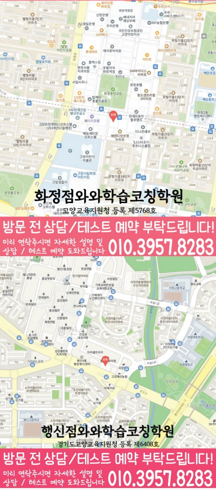

과목별 우선순위
내신과 모의고사에서 점수 변동이 큰 과목과 단원을 먼저 확인합니다.
LOCAL HIGH SCHOOL COACHING
경기 고양시 화정동에서 고등학생학원을 찾는 학생을 위해 학년 단계에 맞는 진단, 계획, 과목별 관리 기준을 정리했습니다.
GRADE ACADEMY GUIDE
화정동 고등학생학원 선택에서 중요한 것은 학년에 맞는 공부 기준을 세우고, 과목별 약점을 다음 학습으로 연결하는 관리 구조입니다. 고등학생 시기에는 내신, 모의고사, 과목별 약점, 시간 관리가 동시에 움직이기 때문에 우선순위를 정교하게 잡아야 합니다.

내신과 모의고사에서 점수 변동이 큰 과목과 단원을 먼저 확인합니다.
공부 시간을 늘리는 데서 끝내지 않고 과목별 사용 시간을 점검합니다.
틀린 문제의 원인을 개념 부족, 시간 부족, 조건 해석 오류로 나눠 다시 봅니다.

STUDY STRATEGY
화정동 고등학생학원 페이지는 학생의 현재 습관, 과목별 이해도, 시험 준비 상황을 기준으로 상담 방향을 안내합니다.
주소
경기 고양시 덕양구 화신로 263 브릿지타워 213호, 214호 와와학습코칭학원
등록정보
화정점와와학습코칭학원 · 고양교육지원청 등록 제5768호
초등
중등
고등
STUDY ROUTINE
이 페이지는 고등학생이 주요 과목의 과제·복습·오답 확인을 꾸준히 실행하도록 시간 배분·과제 완료·복습 간격을 설계하는 방법을 안내합니다. 경기 고양시 화정동의 와와학습코칭센터 화정점 센터정보를 바탕으로, 학생이 학교생활과 함께 지속할 수 있는 실행 단위를 정리했습니다.
학년 단계와 생활 리듬이 중심입니다. 주요 과목의 특정 단원이나 시험 문항 분석보다 학년 일정에 맞춰 제한된 자습 시간을 배분하는 습관을 실제 주간 계획으로 만드는 데 초점을 둡니다.
WEEKLY PRACTICE
취약 단원에만 오래 머물러 다른 과목과 누적 복습이 밀리는 학생이라면 공부 내용을 더 추가하기 전에 실제로 사용할 수 있는 시간부터 계산해야 합니다. 내신·수행평가·모의고사 일정을 먼저 펼쳐 놓고 주요 과목의 과제·복습·오답 확인에 필요한 시간을 나눈 뒤, 완료 여부와 다음 복습 날짜를 주간 단위로 확인합니다.
고등학생 주요 과목 학습 운영에 집중합니다. 학년 단계와 생활 리듬이 중심입니다. 주요 과목의 특정 단원이나 시험 문항 분석보다 학년 일정에 맞춰 제한된 자습 시간을 배분하는 습관을 실제 주간 계획으로 만드는 데 초점을 둡니다.
센터정보에 확인된 관련 가능 학년은 고1·고2·고3입니다. 학교·이동·휴식 시간을 제외한 실제 학습 가능 시간을 먼저 찾습니다.
센터정보에 기재된 참고 학교는 화정고·화수고·백양고입니다. 실제 재학 학교와 시험 범위는 상담에서 다시 확인합니다.
학년 일정에 맞춰 제한된 자습 시간을 배분하는 습관이 실제 기록으로 이어지는지 기록으로 확인합니다. 센터별 플래너 점검 방식은 상담에서 확인하세요.
최근 일주일의 시작 시간·완료 과제·미룬 복습을 간단히 적고, 최근 시험지와 과목별 과제·공부 시간 기록도 함께 알려주세요.
ROUTINE CHECKLIST
평일과 주말에 실제로 공부를 시작할 수 있는 시간과 종료 시간을 적습니다.
내신·수행평가·모의고사 일정을 날짜순으로 펼쳐 놓고 마감이 가까운 과제를 표시합니다.
취약 단원에만 오래 머물러 다른 과목과 누적 복습이 밀리는 학생인지 최근 일주일의 계획과 완료 기록을 비교합니다.
학년 일정에 맞춰 제한된 자습 시간을 배분하는 습관이 실제 기록으로 이어지는지 다음 주 플래너에서 확인할 기준으로 정합니다.
PARENT REVIEW
화정동 고등 상담 과정에서 학부모가 자주 확인한 관리 기준과 후기를 정리했습니다.
화정동 고등 상담에서 아이에게 지금 필요한 공부 기준을 구체적으로 알 수 있었습니다.
학부모학습 습관이 잡히면서 공부하는 시간이 자연스럽게 늘었습니다.
학부모학부모와 선생님이 함께 아이를 지도한다는 느낌을 받았습니다.
학부모처음 상담 때부터 아이의 공부 습관을 먼저 살펴보고 필요한 부분을 차근차근 잡아줘서 도움이 됐습니다.
학부모무리한 선행보다 아이에게 필요한 학습을 추천해 주셨습니다.
학부모오답을 꼼꼼하게 관리해 주셔서 같은 실수를 줄일 수 있었습니다.
학부모FAQ
고등학생학원 상담 전 많이 묻는 내용을 정리했습니다.
화정동 고등학생학원 페이지는 고등학생 주요 과목 학습 운영을 중심으로 안내합니다. 이 페이지는 고등학생이 주요 과목의 과제·복습·오답 확인을 꾸준히 실행하도록 시간 배분·과제 완료·복습 간격을 설계하는 방법을 안내합니다. 특히 학년이 올라간 뒤 과목별 공부량이 늘어 복습 시간을 확보하지 못하는 학생인지 먼저 확인합니다.
최근 시험지와 과목별 과제·공부 시간 기록과 실제 공부 시간을 먼저 확인합니다. 이후 내신·수행평가·모의고사 일정을 먼저 펼쳐 놓고 주요 과목의 과제·복습·오답 확인에 필요한 시간을 나눈 뒤, 완료 여부와 다음 복습 날짜를 주간 단위로 확인합니다.
네. 확인된 가능 학년은 고1·고2·고3이며, 참고 학교 정보는 화정고·화수고·백양고입니다. 실제 재학 학교와 시험 범위는 상담에서 다시 확인합니다.
가능합니다. 현재 주요 과목 진도와 기초 이해도를 먼저 확인하고, 바로 따라가기 어려운 부분은 우선순위를 정해 복습한 뒤 학교 진도와 연결합니다.
최근 시험지, 현재 교재, 학교 진도, 수행평가 일정, 자주 틀리는 문제를 함께 알려주시면 상담에서 학습 방향을 더 구체적으로 잡을 수 있습니다.
네. 학생이 실제로 지킬 수 있는 주간 분량을 플래너에 정리하고, 완료 여부와 막힌 지점을 확인해 다음 계획을 조정합니다.
SAME LOCAL PAGE
화정동 지역의 과목별·학년별 페이지 23개를 목적별로 묶었습니다. 필요한 조합을 펼쳐서 바로 이동해보세요.
고등 CONSULTING
고등학생 시기에는 내신, 모의고사, 과목별 약점, 시간 관리가 동시에 움직이기 때문에 우선순위를 정교하게 잡아야 합니다.